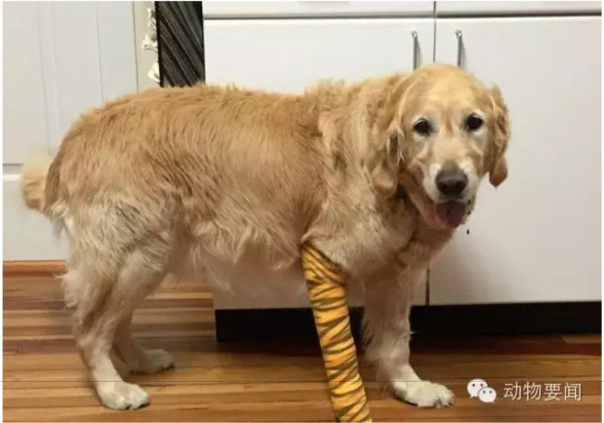

关键时刻 导盲犬为主人挡了汽车
一只金毛导盲犬在和主人过马路时被一辆校车撞倒。被撞的瞬间，金毛勇敢地挡在主人身前，承受了大部分的撞击伤害，多处骨折，主人则受轻伤，在医院休养。
据称在事故现场，尽管受伤，金毛还是守着主人，一声不响地接受包扎，在场的救护人员无不动容。

转自微博“北美省钱快报” · 图 · USA TODAY
一只金毛导盲犬在和主人过马路时被一辆校车撞倒。被撞的瞬间，金毛勇敢地挡在主人身前，承受了大部分的撞击伤害，多处骨折，主人则受轻伤，在医院休养。
据称在事故现场，尽管受伤，金毛还是守着主人，一声不响地接受包扎，在场的救护人员无不动容。
